| 日付 | 2020年11月15日（日） |
|---|---|
| 山域 | 御坂･天子山塊 |
| メンバー | 家族（妻、長女・9歳、長男・7歳） |
| 山行形態 | 子連れ日帰り |
| アクセス | 車 |
| ルート (Map) | 駐車場 (8:32) - (8:48) 分岐点 - (10:18) 地蔵峠 (10:34) - (11:43) 尾根コース下降点 - (11:54) 毛無山 (12:21) - (12:27) 尾根コース下降点 - (14:21) 分岐点 - (14:31) 駐車場 |
天子山塊の最高峰、毛無山。この山は13年前に登ったのだが、
その時は快晴予報に反して、バスを降りた途端に富士山が雲に覆われてしまった。
山頂に着いた頃には山全体がどんよりとした雲に覆われ、
全く景色が広がらなかった、という苦い思い出がある。
快晴予報の週末、今度こそ山頂から大きな富士を眺めようと
13年振りに毛無山に向かう。
有料駐車場に車を停める。標高870m。
8:15に着いたのだが、もうかなり車が埋まっている。
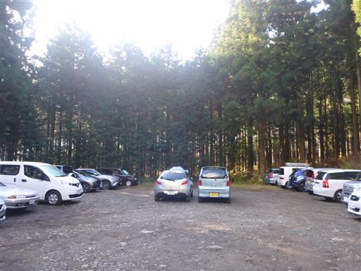
建物から延びる竹筒から水が流れ出ている。
建物の中はどうなっているのだろう？
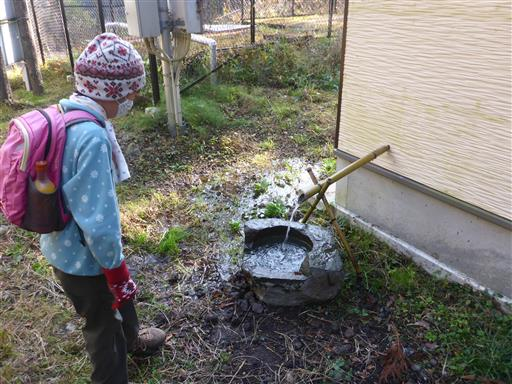
麓宮にお参り。毛無山に若干雲がかかっているので、晴れるようにお参りする。
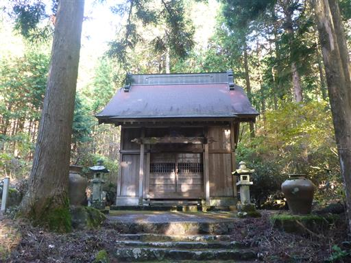
毛無山の麓は紅葉が美しい。
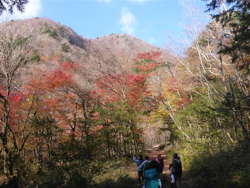
登山道に入って間もなく分岐点に到着する。
地蔵峠方面は崩落していると記載されているが、
記録では最近でも歩いている人がそれなりにいるため、地蔵峠経由で登る。
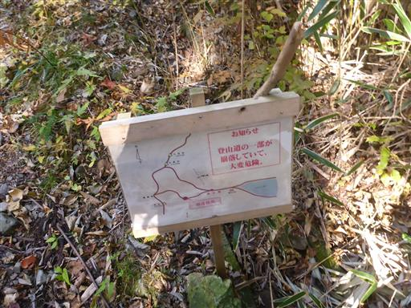
こちらの道は沢沿いの道だ。何度か沢を渡る。
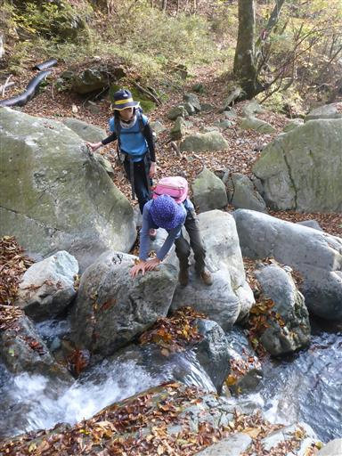
他に歩いている人はおらず、静かで気持ちの良い道だ。
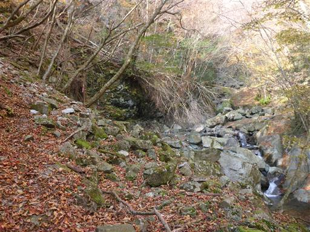
再び沢を渡る。
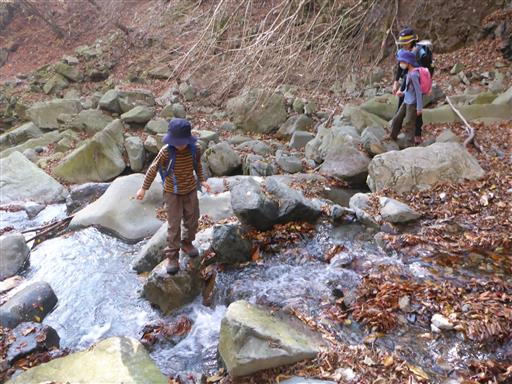
比丘尼の滝。三段の美しい滝だ。
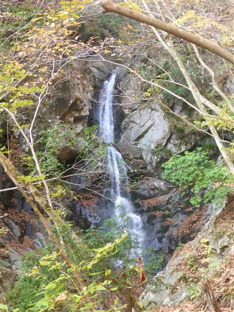
沢沿いの道のため、少々危険度の高いところもある。
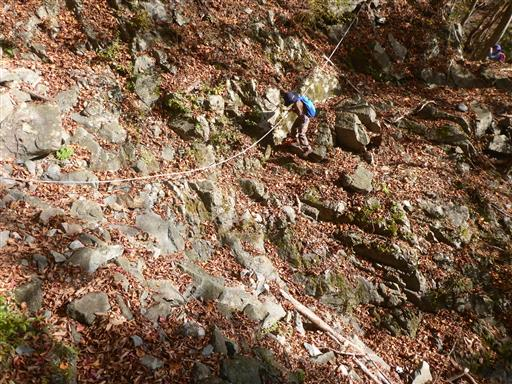
ほとんどの木が葉を落としているが、ところどころに紅葉が残っている。
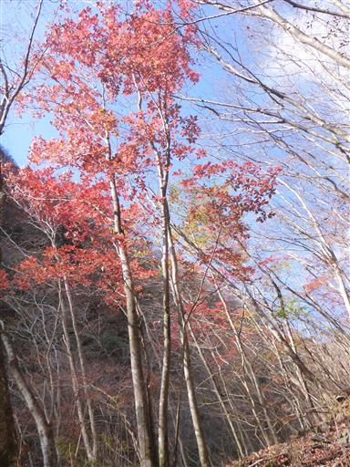
沢を渡るため一旦ロープに捕まって下る。
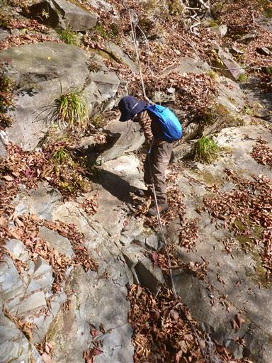
沢を渡ったら岩をよじ登る。崩落地点とはここのことなのだろうか？
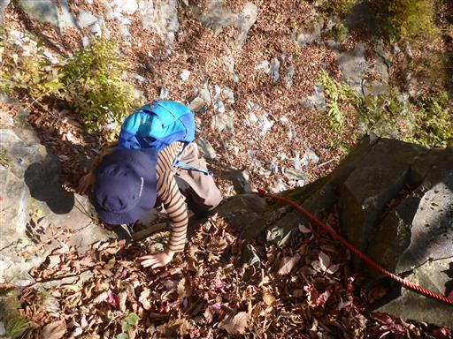
眼下を流れる川は非常に美しい色をしている。
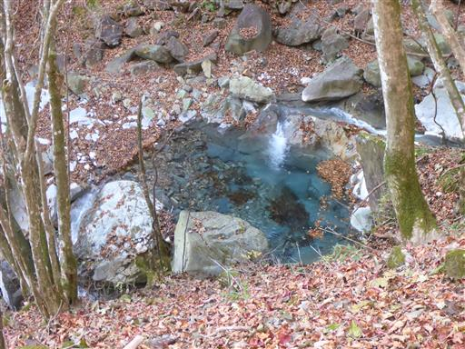
しばらく登ると針葉樹林帯になる。
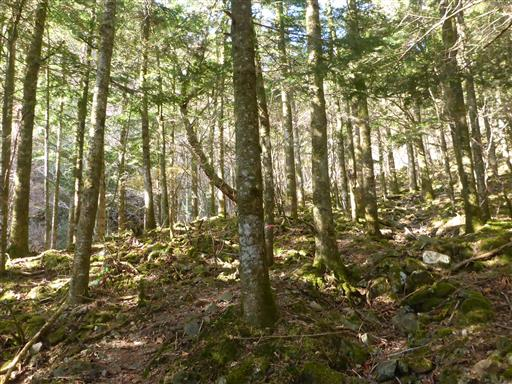
再び小さな沢を渡る。ここまで登るともう水の流れはわずかだ。
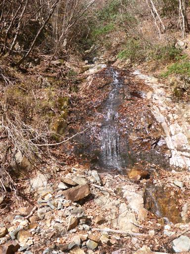
沢から離れるところは再び岩場。
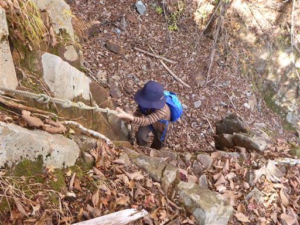
地蔵峠に到着する。古そうなファンタの瓶が置かれている。
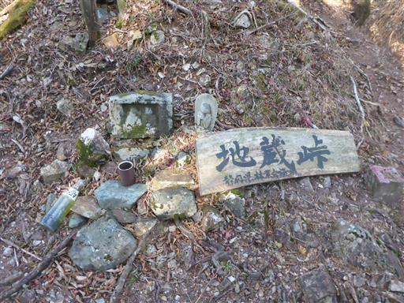
息子と先行してここまで来たので、ここで妻と娘を待つ。
地面からにょっきりと木が頭を出している。木の根だろうか？
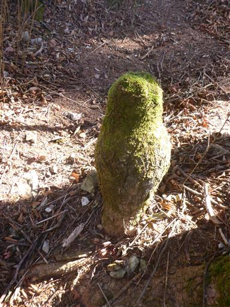
少し歩くと下部温泉へ下る道が現れる。以前苦労して歩いた道だ。
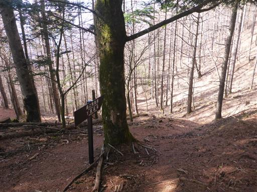
雲の量がどんどん増えてきている。山頂からの眺望が心配だ。
ほとんど眺望が開ける場所は無いが、念のため富士山の写真を1枚撮っておく。
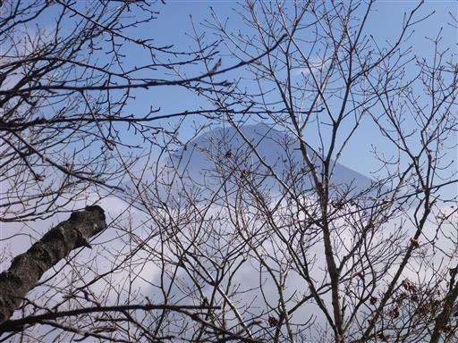
東側からどんどん雲がやって来る。
西側の南アルプス方面は快晴だが木が邪魔してすっきりとした眺望は得られない。
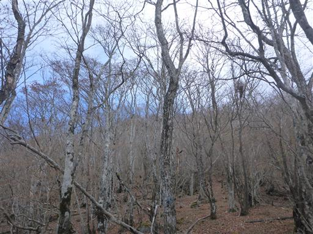
気持ちの良い縦走路。地蔵峠からの登りはそれなりに辛いが、
一気に標高を上げると、だいぶ傾斜が緩んでくる。
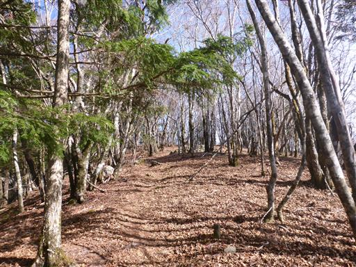
マツダランプの古い標識。ここがもう一方の登山道との合流地点だ。
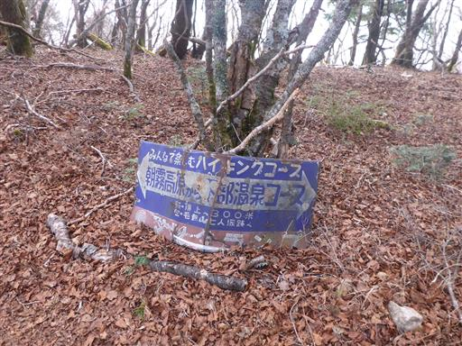
北アルプス展望台の標識。早速側の岩に登ってみる。
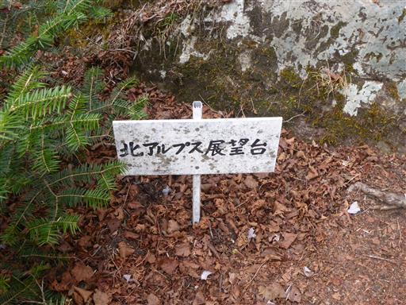
南アルプスが見渡せる。さっきまで西側は快晴だったのに、
少しずつ雲に覆われだす。

八ヶ岳も隠れてしまいそうだ。
北アルプスは見えなかったが、条件が良いと見えるのだろうか？
それとも南アルプス展望台の間違いなのだろうか？
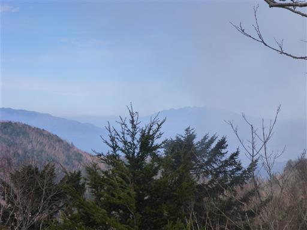
大木がバラバラになっている。
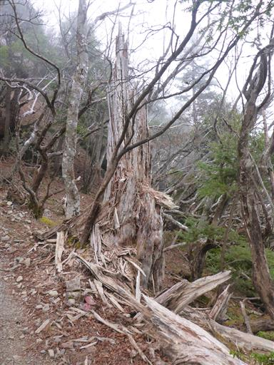
毛無山山頂に到着する。標高1945m。
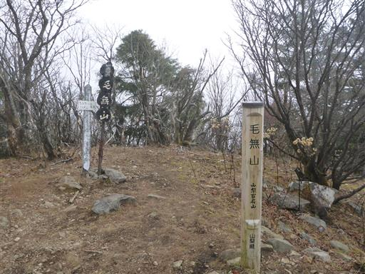
山全体が雲に覆われてしまい、完全に視界は無くなってしまった。
これにはがっかりだ。13年前でも、これよりもう少し展望はあった。
標高最高地点はこの先にあるのだが、あまり行く意味もないので
おやつ休憩をとったらすぐ下山する。
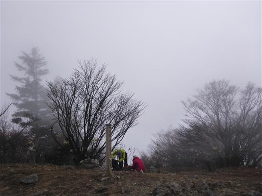
登山道も雲に覆われだす。天気はどんどん悪化している。
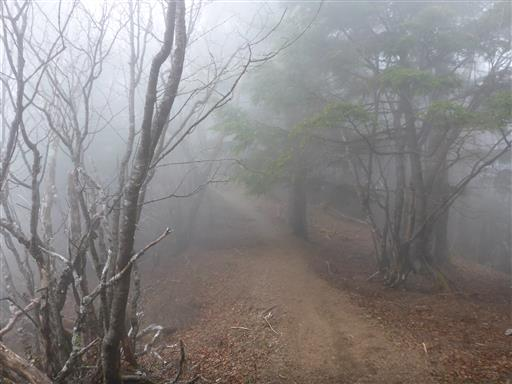
下山はもう1本の登山道の尾根道を下る。

かなりの急斜面の登山道で、岩がちな地形だ。
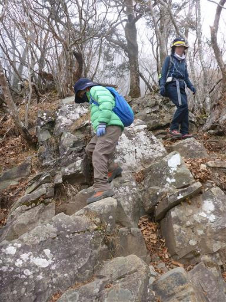
登山道はずっと急斜面。
奥多摩三大急登として有名な稲村岩尾根より平均斜度は上だ。
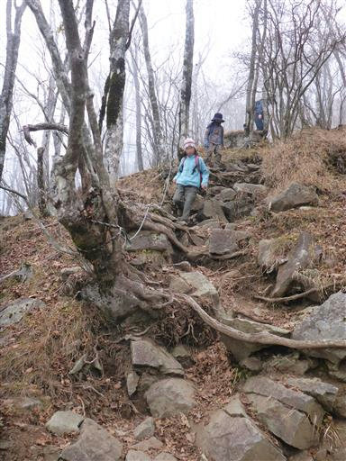
下っても下っても空はどんよりしている。
なかなか雲の下に出ない。
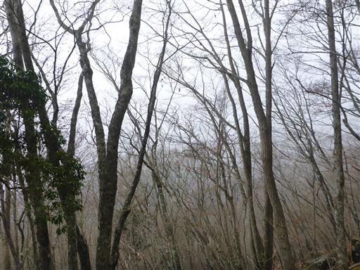
毛無山五合目に到着。ようやく半分だ。
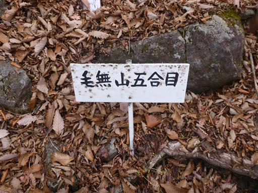
木が倒れて大きな空洞ができている。
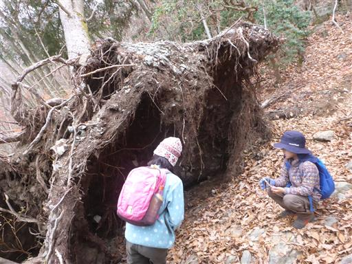
岩場が何ヶ所か存在するが、難易度は高くない。
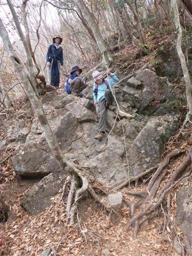
不動の滝。距離は遠いが二段の落差の大きい滝が望める。
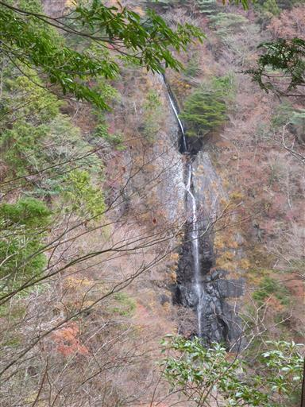
ようやく雲の下に出て視界が広がる。すさまじくどんよりとした空だ。
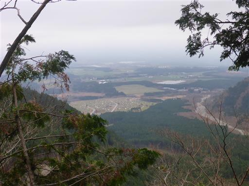
眼下に見えるキャンプ場。秋も深まりかなり寒いと思うが、多くのテントが見える。
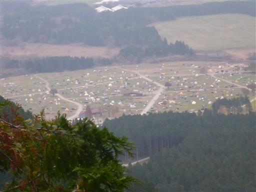
再び岩場。
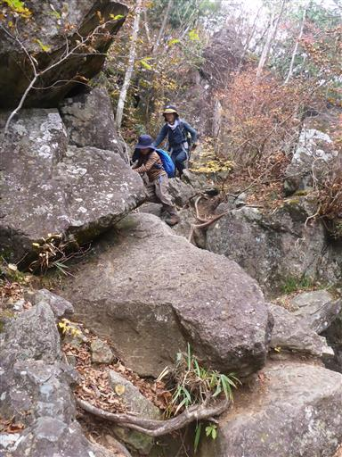
はさみ石。左右の石に挟まれるように登山道が付いているから、
こう名付けられたのだろうか？
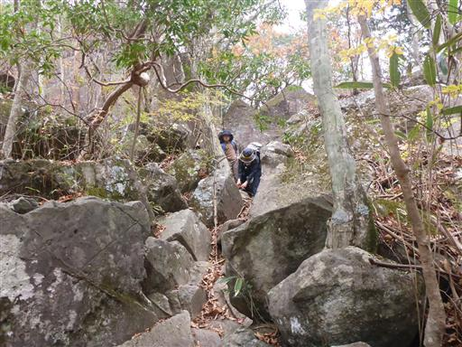
麓まで下ってくる。空は暗いがそれでも紅葉はきれいだ。
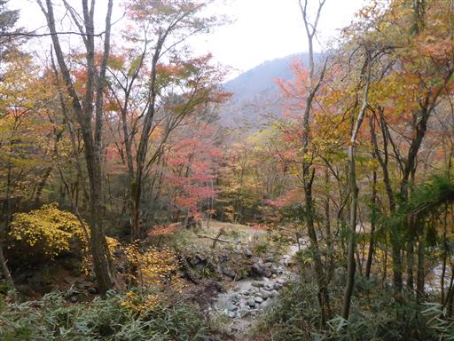
雲天の下、少し紅葉を楽しむ。
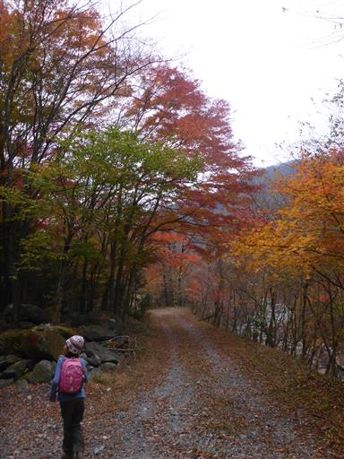
あとはとぼとぼと車道を歩いて駐車場に戻る。
毛無山から大きな富士山が見たい、という13年越しの望みは結局果たせなかった。
帰りの車で通過した御坂山塊には雲がかかっておらず、富士山もきれいに見渡せた。
雲がかかっていたのは天子山塊のみで、それ以外は快晴だったようだ。
何らかの地形の影響か、天使山塊は雲がかかりやすいのかもしれない。
登山道の周囲の景色は美しく、ロングコースを歩けたことも収穫だったが
何といっても快晴の週末に、晴れた山を歩けなかったのは無念だった。
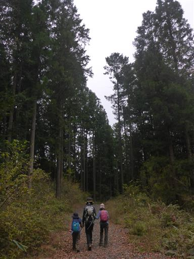